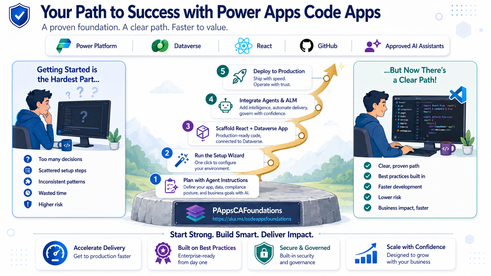
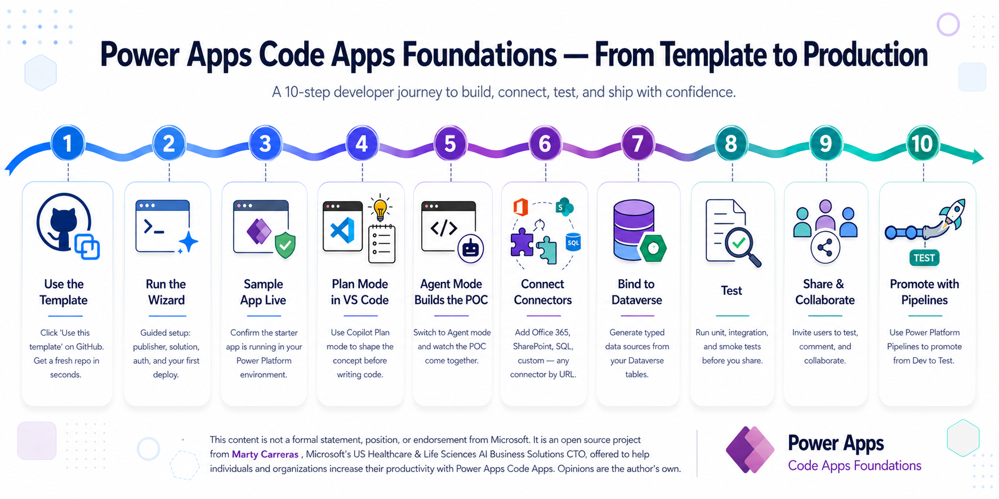
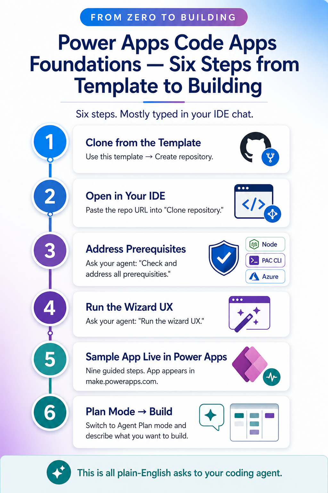
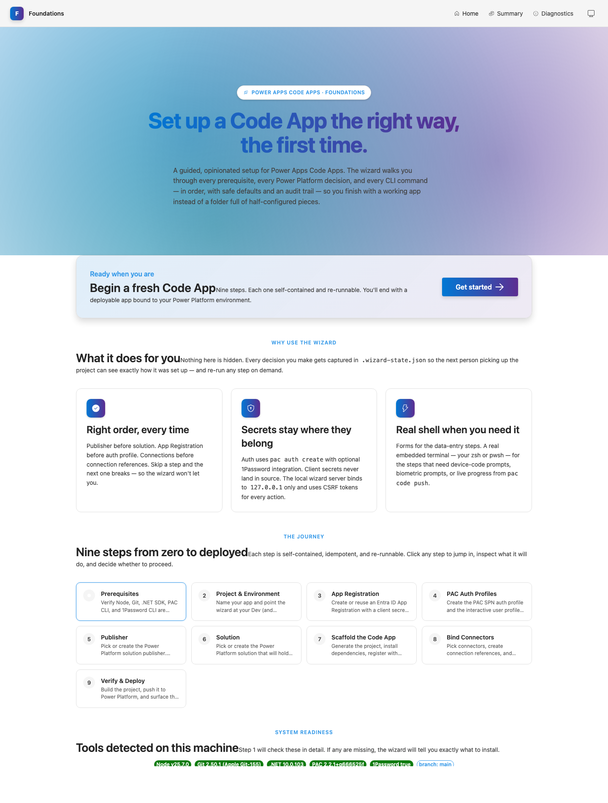

Take that hackathon idea — the one your team built in a weekend — and turn it into a real, governed, enterprise-grade application on the Power Platform. Powered by Dataverse. Guided by your favorite coding agent. Crafted so your first app feels like your hundredth.

A conversational walkthrough of how Foundations turns a weekend hackathon idea into a governed, agent-built application on the Power Platform. Pop it on during your commute, then come back for the diagrams and the wizard.
From clicking Use this template to promoting through Power Platform Pipelines — Foundations gives every team the same proven path. One picture says it all.

Click Use this template on GitHub → run the Wizard → ship your first app. The rest of this page explains how.
The 10-step journey above is the concept. Here is what it actually feels like sitting at your keyboard. Most of these are just plain-English asks to your coding agent — Copilot, Claude, Cursor, whichever you use.
On GitHub, click Use this template → Create a new repository. You now own a complete, batteries-included repo of your own.
Ask your IDE to clone the repo — usually just paste the URL into the Clone repository prompt and pick a folder.
Open the chat and say: "Check for and address all prerequisites for this repo." Node, PAC CLI, npm packages, sign-ins — the agent walks you through every gap.
Prefer to do it yourself? Follow the Prerequisite Setup Guide — step-by-step instructions for macOS and Windows, takes about 10 minutes.
Just type: "Run the wizard UX." A guided browser experience launches at localhost and walks you through publisher, environment, App Registration, auth, and scaffold.
Nine steps, all visual. At the end, your sample Code App is registered, deployed, and showing up in make.powerapps.com ready to play.
Open Agent Plan mode in your IDE and describe what you want to build. The agent reads AGENTS.md and the instruction files, plans the work, and gets to it.

Power Apps Code Apps let you write real React + TypeScript applications that run on Power Platform infrastructure — with enterprise auth, Dataverse, 1000+ connectors, and managed ALM built in. No more choosing between developer freedom and platform governance.
Write standard React 18 with Fluent UI v9, TanStack Query, React Router, and Vite. Your existing frontend skills transfer directly. No proprietary low-code canvas to learn.
Entra ID authentication is automatic. No OAuth flows to build, no token management, no login screens. Every user is authenticated before your first line of code runs.
Dataverse, SQL, SharePoint, Teams, Office 365, custom APIs — all accessed through generated TypeScript SDKs. The Power Platform sandbox handles auth and DLP enforcement for every call.
Your Code App, Dataverse tables, security roles, and connection references all travel together in a single solution. Export from dev, import to prod. Proper version control for enterprise IT.
Vitest + Playwright + MSW ship in the scaffold. Smoke tests pass on first run. Mock providers mean the prototype is testable before Dataverse tables even exist.
Native guidance for GitHub Copilot, Claude Code, Cursor, and Codex. Each agent reads the same 14 scoped instruction files in its own format — .github/instructions/ for Copilot, .claude/rules/ for Claude, .cursor/rules/ for Cursor, and nested AGENTS.md for Codex. Your standards, enforced by whichever agent your team picks.
Foundations is the implementation path. Power Apps Code Apps Advantage is the companion narrative for leaders and architecture teams: why Code Apps matter, where they fit, and how they change the build-vs-buy conversation for governed AI-era applications.
An interactive deep-dive: every trap PACAF prevents, every knowledge source it weaves together, every token-wasting reasoning loop it eliminates — plus honest answers to every "I saw a demo that looked way simpler" question.
What typically takes weeks of tribal knowledge, false starts, and rework — Foundations encodes into a repeatable, tested path.
| Challenge | Without Foundations | With Foundations |
|---|---|---|
| Project Setup | Scattered docs, tribal knowledge, days of config | ✓ Interactive wizard — terminal or beautiful browser experience — working app from zero |
| Architecture Decisions | Ad hoc, inconsistent across projects | ✓ Opinionated 4-layer architecture, enforced by your coding agent |
| Dataverse Schema | Create tables in portal, forget solution context, orphan artifacts | ✓ Plan-first artifact workflow with validation scripts |
| Business Problem → Code | Jump to code, discover missing requirements in production | ✓ Narrative-first decomposition → prototype validation → then code |
| Authentication | Manual PAC auth setup, secrets in plain text, broken CI | ✓ 1Password integration, encrypted .env, pre-commit secret guard |
| Testing | "We'll add tests later" (they never get added) | ✓ Smoke tests pass on scaffold, MSW for connector mocking |
| Deployment | Manual pac code push, no CI/CD blueprint, no solution export | ✓ Documented CI/CD blueprint + solution export script + Power Platform Pipelines model |
| Agent Quality | Generic suggestions that don't match your patterns | ✓ Native guidance for 4 agents: Copilot, Claude Code, Cursor, Codex + AGENTS.md fallback for others |
Foundations doesn't just scaffold a project — it encodes an iterative discovery-to-deployment methodology that consulting firms charge millions to deliver. Every phase has clear inputs, outputs, and stop conditions.
Start with a freeform narrative. Your coding agent decomposes it across 12 business dimensions — actors, workflows, approvals, exceptions, reporting needs, collaboration surfaces. No rigid questionnaires. Just structured thinking about what you're actually building.
Instruction: 00aChallenge the happy path. Surface approvals, automation boundaries, Teams integration needs, document outputs, governance requirements, and phased delivery decisions. Enterprise completeness checks ensure you don't discover missing requirements in production.
Instruction: 00bTranslate refined scope into candidate entities, relationships, ownership patterns, lifecycle states, and automation boundaries. The conceptual model feeds into a structured planning artifact — the Dataverse planning payload.
Instruction: 00c + schema-plan.jsonBuild a clickable UX against mock providers. Pressure-test every screen with stakeholders using realistic edge-case data. Capture findings in a structured feedback artifact. Refine the planning payload before you freeze a single Dataverse table.
Instruction: 00d + seed scriptsExecute the golden sequence: Option Sets → Tables → Columns → Lookups → Security Roles → Publish → Register Data Sources. Foundations generates a structured provisioning plan, then the Dataverse-skills plugin handles the actual provisioning through its dv-metadata skill — idempotent, error-aware, and MCP-native.
Swap mock providers for real adapters. Run the full test suite. Build with Vite. Deploy via pac code push to dev, then promote through Power Platform Pipelines to test and production. CI/CD enforces the gate: no test evidence, no deploy.
Instructions: 01–06Same `.wizard-state.json`, same opinionated sequence — pick the surface that fits the moment. Every step is self-contained, idempotent, and re-runnable. Every decision lands in audit-friendly state on disk. Smart paste handling means you never hand-edit a URL again. Step 10 detects your coding agent and shows the exact Dataverse-skills plugin install command.

npx @pacaf/wizard-ux@latest opens a Fluent UI v9 web app on 127.0.0.1:5174 with a step navigator, status pills, theme switching, and embedded terminal handoffs for device-code or biometric prompts.
Paste an environment URL with or without https:// and the wizard normalizes it. Paste a Maker Portal connection URL and it extracts the connector apiId plus connection GUID in one shot.
The connector step starts with common choices, then lets you add another connector by URL or apiId. Drop in Approvals, Outlook Tasks, or any published custom connector.
Every Power Apps Code App sits on Microsoft Dataverse — a petabyte-scale, security-aware, relationship-rich data platform that would cost a fortune to build from scratch.
Business unit hierarchies, security roles, and field-level security enforce access at the data layer — not in your React code. Your app UI can be simpler because the platform does the hard work.
One-to-many, many-to-many with real junction tables, and polymorphic lookups that can reference multiple entity types. Data modeling that rival databases charge premium tiers for.
Tables, columns, option sets, security roles — they all travel inside your solution. Export from dev, import to prod. Schema changes are version-controlled and ALM-ready.
Push validation logic into the data layer where it applies to every client — your Code App, model-driven apps, Power Automate flows, and direct API calls.
Built-in change tracking, audit logging, and data retention policies. Your compliance team will thank you for not building this from scratch.
Schema provisioning, data operations, and solution lifecycle are handled by the Dataverse-skills plugin — a battle-tested, MCP-first toolkit that teaches your coding agent to drive Dataverse through natural language. Foundations plans, the plugin provisions.
Every Power Platform connector generates a strongly-typed TypeScript SDK. No REST endpoints to discover, no auth to configure, no middleware to build. Just pac code add-data-source and write your business logic.
When your solution needs conversational AI, Foundations has you covered. Full integration guidance for Microsoft Copilot Studio — from connection discovery to multi-turn chat UIs with real-time streaming.
The discover-copilot-connection.mjs script finds existing Copilot Studio connections in your environment. Zero connections? It walks you through creation in the Maker Portal.
Foundations documents the one method that actually works for synchronous agent responses. No more discovering the hard way that ExecuteCopilot is fire-and-forget.
A production-ready useCopilotAgent hook with TanStack Query integration, conversation state management, and safe response-casing normalization.
Copilot Studio integration is optional. Add it when your solution benefits from conversational guidance, summarization, or assisted decision-making — not because it's trendy.
Most teams spend their first month discovering the hard way that Dataverse tables need solution context, that pac code push rejects service principals, and that the generated SDK breaks without moduleResolution: "bundler". Foundations encodes every one of those lessons — so your team starts building features on day one, not debugging platform quirks.
— The experience of every team that built Code Apps before this template existed
Foundations is not a kitchen-sink boilerplate. Every file has a purpose. Every instruction is scoped. Every script is re-runnable.
.github/instructions/ with applyTo scopes. Native projections are generated for each agent: .claude/rules/ for Claude Code, .cursor/rules/ for Cursor, and nested AGENTS.md files for Codex. A top-level AGENTS.md provides non-negotiable architectural guardrails that every coding agent honors — including Cline, Aider, and any tool that reads root-level context.
npx @pacaf/wizard-ux@latest) — a localhost web app at http://127.0.0.1:5174 built with the same Fluent UI v9 design language you'll use in your Code Apps. Step navigator with status pills, jump-to-step, resume detection, light/dark/system themes, live log panel with SSE streaming, and one-click terminal-handoff cards for steps that need interactive auth. CSRF-protected, localhost-only, auto-shutdown on idle.npx @pacaf/wizard@latest) — equivalent Node.js CLI that runs natively on macOS, Linux, and Windows. Headless and SSH-friendly. No WSL required..wizard-state.json, so you can switch between them at any time without losing progress. Both check prerequisites, collect project identity, guide portal steps, set up auth (1Password or encrypted .env.local), scaffold React + Fluent UI, seed prototype assets, run smoke tests, and finish by helping you install the Dataverse-skills plugin for your coding agent. Save progress with Ctrl+C, resume anytime, or --reset to start over.
list_tables / describe_table — discover existing schema before proposing anything newdv-metadata — provision tables, columns, relationships, and option setspac code add-data-source — register each table as a Code App data source, regenerating the SDKseed-prototype-assets.mjs script generates domain contracts, mock providers, a provider factory, and a feedback artifact from your planning payload. This means your UX is buildable and testable against mock data before a single Dataverse table exists. Stakeholders review a real app, not wireframes.
.env.local (machine-specific decryption keys). A pre-commit hook blocks accidental secret commits. CI/CD uses GitHub secrets with SPN profiles for solution export/import, and separate user profiles for pac code push to dev.
npx pacaf-update in your derived repo to pull the latest @pacaf/scripts, @pacaf/agent-instructions, and instruction files. No fork management, no merge conflicts with your app code. Your project gets the accumulated lessons of every team that came before — automatically. A .foundations-version.json bundle tag lets downstream repos see which version they are on.
Get from a weekend idea to a working, testable, deployable Power Apps Code App in a single session. Your team. Your standards. Your platform.
Use this template →
npx @pacaf/wizard-ux@latest
npx @pacaf/wizard@latestPlan mode → "Help me plan this app"